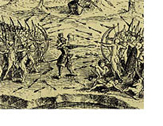
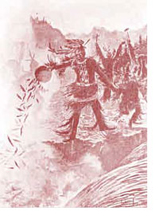

Time Meddlers
- Reviews
- Read Chapter One
- Ottawa / Odawa
- Algonquin
- Iroquois
- War and Champlain
- Bonus Materials


War and Champlain
Despite the fact that the Five Nations were at peace with each other, they were not at peace with the Algonquin and the Huron nations. They were bitter enemies and continually fought with each other. No one seems to know how it started, and there were occasions where the Five Nations attempted to make peace, but these failed. One of the reasons today's Mohawks cite is that they refused to bring other nations in as full fledged members, only associate members of their alliance.
Champlain
I have a depiction here of an Algonquin offering tobacco into the rapids at the Chaudiere Falls on the Ottawa River. We know about this tradition because Champlain described it in his journal, so we also learned about the original Algonquin people from the explorers.
Traditions and stories were passed on orally by the First Nations, and some of these have been lost. Still certain things live on because of historical accounts that were published.
Champlain is long dead. He died December 25th, 1635, but certain things survived him. One was an astrolabe—an instrument used for navigation—that he dropped on his way up the Ottawa River. It now resides in the Canadian Museum of Civilization in Hull, Quebec.
The second and most important thing he left was a diary of his explorations. The best account I could find was a book by Morris Bishop called Champlain, The Life of Fortitude. It has many direct references to Champlain’s own diary. I came to understand that despite some of the nasty dealings of other explorers and settlers with the natives, Champlain was a rather noble man and dealt honourably with the Algonquin and the Huron people. Also, he was a courageous fellow. Despite not knowing how to swim, he shot the Lachine Rapids with the Algonquin on their fragile birch bark canoes. And above all, he was kind. Before traveling to Canada, he went to Mexico and made a statement that I think portrays his true nature.
“At the beginning of the King of Spain’s conquests, he had established the Inquisition among the Indians, and enslaved them, or caused them to die in such great numbers that the mere story of it rouses pity. This bad treatment was the reason that the poor Indians would flee to the mountains like desperate men. (They’re still there today.) We shall see in New France there are no forced conversions.”
And he was true to his word. Unfortunately, those that followed were not.